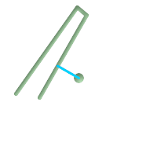
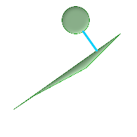

ST_ShortestLine — 二つのジオメトリの3次元の最短ラインを返します。
geometry ST_ShortestLine(geometry g1, geometry g2);
二つのジオメトリの2次元最短ラインを返します。複数発見した場合には、最初のラインを返します。g1とg2が1点でインタセクトする場合には、インタセクトした点を始点と終点として返します。g1とg2が複数点でインタセクトする場合には、インタセクトした点からなるラインを返しますが、どの点になるかは分かりません。返されるラインは常にg1が始点でg2が終点です。この関数が返すラインの長さは常にg1とg2を引数に取ったST_Distanceの返り値と同じです。
Availability: 1.5.0
 ポイントとラインストリングの最短ライン
SELECT ST_AsText(
ST_ShortestLine('POINT(100 100)'::geometry,
'LINESTRING (20 80, 98 190, 110 180, 50 75 )'::geometry)
) As sline;
sline
-----------------
LINESTRING(100 100,73.0769230769231 115.384615384615)
|  ポリゴンとポリゴンの最短ライン
SELECT ST_AsText(
ST_ShortestLine(
ST_GeomFromText('POLYGON((175 150, 20 40, 50 60, 125 100, 175 150))'),
ST_Buffer(ST_GeomFromText('POINT(110 170)'), 20)
)
) As slinewkt;
LINESTRING(140.752120669087 125.695053378061,121.111404660392 153.370607753949)
|